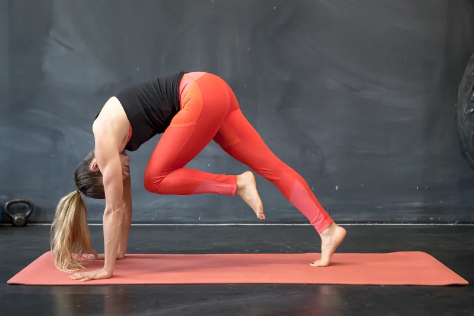

Почему йога так популярна? Во-первых, занятия йогой положительно влияют на наше здоровье, а во-вторых, она проста и понятна. Можно начать с элементарных упражнений, которые под силу каждому. Итак, как йога укрепляет наш организм:
- ПОВЫШАЕТСЯ СИЛА И ГИБКОСТЬ. Йога помогает привести в порядок не только мысли, но и тело. Повышается гибкость и выносливость, укрепляются мышцы спины, включается пресс, а значит, улучшается осанка, равновесие и общее самочувствие.
- ОЧИЩАЕТСЯ РАЗУМ. Во время йоги тебе нужно полностью сосредоточиться на себе и собственном теле. Это помогает очистить разум от навязчивых мыслей и страхов, что особенно важно в стрессовый период.
- УЛУЧШАЕТСЯ СОН. Релаксация является важной частью йога-практики и по сути готовит твое тело ко сну. И чем крепче ты спишь, тем выше твоя стрессоустойчивость в повседневной жизни.
КАК ЗАНИМАТЬСЯ ЙОГОЙ ДОМА
Для начала выбери удобное место для занятий. Подойдет любое свободное пространство примерно метр в ширину и два метра в длину. В идеале - перед зеркалом, но не обязательно.
Все упражнения в йоге выполняются без обуви. Для занятий тебе нужна только удобная одежда и нескользящий коврик для йоги. Если коврика нет, ты можешь начать тренироваться на полу. Главное, чтобы поверхность была нескользкой. А присмотреть комфортный коврик можно здесь.
Выполняй все упражнения медленно и полностью концентрируйся на себе и собственных ощущениях. Растяжение в мышцах не должно вызывать сильный дискомфорт, и ни в одной позе тебе не должно быть больно.
Позы в йоге называются асанами. Мы подобрали для тебя несколько эффективных асан, которые подходят новичкам. Следуй нашему плану тренировок дома и наслаждайся временем для себя.
ШЕСТЬ АСАН ДЛЯ НАЧИНАЮЩИХ
Отличная асана для укрепления мышц бедра и ягодиц. Чтобы встать в позу воина II, расставь широко ноги и поставь пятки параллельно друг другу. Разверни правую стопу так, чтобы пальцы смотрели вбок. Подними руки до уровня плеч и держи параллельно полу ладонями вниз. На выдохе согни правое колено. Не уводи его в сторону - оно должно находиться на одной линии с лодыжкой. Корпус держи прямо, а голову поверни вправо. Задержись в этой позе на одну минуту, потом выпрямись и согни левую ногу.
Поза стула задействует ноги, спину и пресс. Подними прямые руки над головой, согни колени и присядь почти до параллели с полом. Ладони смотрят друг на друга. Если тебе тяжело держать руки прямыми, то согни их в локте и разведи в стороны (поза кактуса) или держи их на уровне груди согнутыми, упирая ладони друг в друга. Перенеси центр тяжести на пятки. Если у тебя болит спина, то эту асану можно выполнять с опорой на стену. Задержись в позе на 10-20 секунд.
Классическая боковая планка не такая простая, как кажется, но со временем делать ее все легче. Поставь руку на коврик и широко расставь пальцы. Стопы положи одну на другую или одну перед другой для большей устойчивости. Подними бедро так, чтобы тело вытянулось в прямую линию. Подними вторую руку и задержись в этой позе на 20-30 секунд. Постепенно увеличивай время. Если сложно стоять на стопах, можно делать боковую планку с колен. Порядок выполнения такой же, но нужно согнуть ноги в коленях, отвести голень и стопы назад, перпендикулярно коленям. Одно колено положить на другое и поднять бедро. В таком варианте можно начинать с 30-45 секунд.
Легко? Идем дальше!
Это динамичное упражнение тонизирует мышцы пресса и улучшает пищеварение. Также оно полезно для женской половой системы. Присядь и поставь на коврик стопы, колени и руки шире плеч. Упрись руками в коврик, выдохни и медленно разгибай колени до тех пор, пока ноги не выпрямятся настолько, насколько возможно. Ты почувствуешь растяжение на задней поверхности бедра. Это асана «Собака мордой вниз», самая известная асана в йоге. Можешь остаться в ней или продолжить дальше и поднять прямую ногу. Так ты перейдешь в «Трехногую собаку».
Теперь на выдохе согни ногу и подтяни колено к носу настолько близко, насколько это возможно. Живот при этом должен быть максимально втянут. Задержись в этой позе на пару секунд и вернись в «Трехногую собаку». Можешь начать с одного раза на каждую ногу и постепенно увеличивать количество повторов.
Эта асана поможет тебе укрепить позвоночник, научит держать равновесие и концентрироваться на одном движении. Встать в позу война III можно двумя способами. В первом случае тебе нужно поднять руки (ладони смотрят друг на друга) и наклониться вперед, одновременно поднимая левую ногу. Вес переносится на правую ногу, при этом обе ноги остаются прямыми. Корпус, левая нога и голова должны образовать одну линию. Не поднимай и не опускай голову – просто смотри на коврик. Задержись в асане на одну минуту. Второй способ встать в позу воина III (более сложный) начинается так же с поднятия рук. При этом тебе нужно шагнуть широко вперед правой ногой, а левую оставить прямой. Из этой позы тебе нужно оттолкнуться, перенести вес на правую ногу, поднять левую ногу и опустить корпус. Таким образом, твое тело будет напоминать букву «Т».
Эта асана улучшает гибкость спины и хорошо влияет на пищеварение. Начни с позы «Собака мордой вниз» и подними вверх правую ногу. Потом подтяни колено к носу как в позе тигра и поставь правую ногу между руками. Вдохни, выпрями корпус и сложи ладони как в знак молитвы. Убедись, что левая нога и пресс работают и не переноси весь вес на ягодицы. Наклони корпус вперед и зацепись правым локтем за левое колено. Сохраняй спину прямой и следи за дыханием. Повтори асану на другую ногу.
НЕ БОЙСЯ
Всегда слушай свое тело и выполняй упражнения медленно. Ничего страшного, если у тебя не получилось с первого раза встать в боковую планку или подтянуть колено к носу в позе тигра. Всему свое время! Продолжай пробовать и отмечать положительные изменения в организме. Ты будешь крепче спать и меньше волноваться, станешь гибче и сильнее. А главное – будешь получать удовольствие от занятий. А когда освоишься с основными асанами, переходи к тренировкам с нашим персональным тренером Идой Мэй.